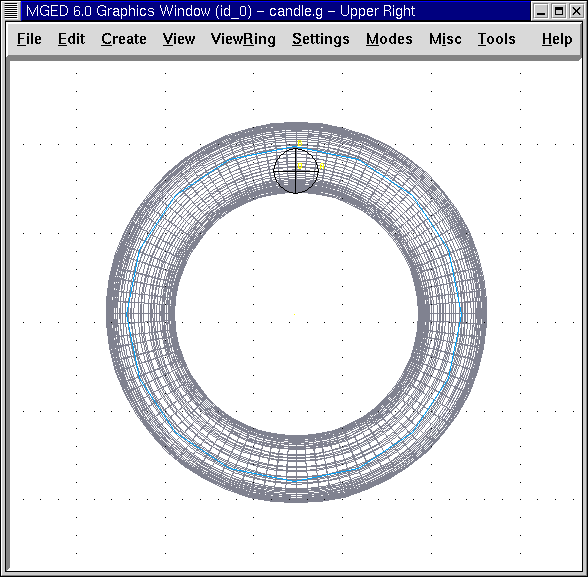
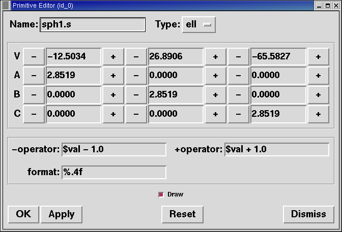
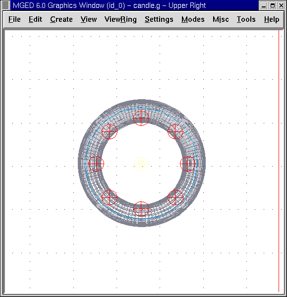
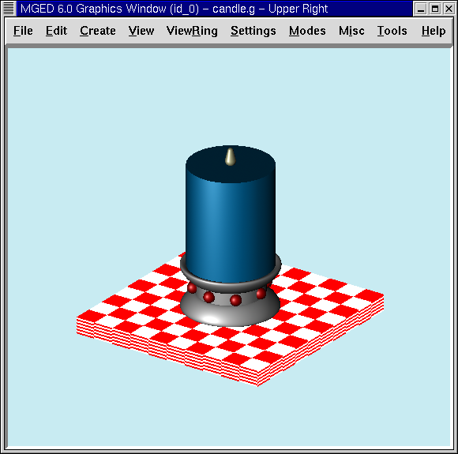

En este tutorial usted aprenderá a:
-
Crear copias de la figura utilizando el Primitive Editor (Editor de primitivos).
-
Dibujar una cuadrícula para facilitar el posicionamiento de los objetos.
-
Controlar el árbol de datos y hacer correcciones de ser necesario.
-
Asignar propiedades de los materiales utilizando el Combination Editor (Editor de combinaciones).
En los tutoriales anteriores, hemos creado y editado y ubicado en espacios 3-D distintas formas. Este tutorial proporciona una práctica más avanzada en estas áreas utilizando el diseño del candelabro que creó en el tutorial anterior.
Abra la base de datos candle.g y dibuje candle1.c.
Creando la primera esfera
Use la GUI para crear una esfera llamada sph1.s. Vaya al menú View (Ver) y seleccione Top View (Vista superior). Del menú Edit (Edición), seleccione Scale (Escala) y modifique el tamaño de la esfera hasta que sea aproximadamente del mismo tamaño que el de la siguiente ilustración:

Utilizando la cuadrícula
Arrastre la esfera hacia el rcc como se muestra en la imagen anterior. Para hacer esta tarea un poco más fácil, usted puede ir al menú Modes (Modos) y seleccionar Draw Grid (Dibujar cuadrícula). Esto creará una superposición de la cuadrícula en la ventana gráfica que le puede ayudará a posicionar la esfera en la base del candelabro.
Utilizando la opción Multipane (Multi-panel)
Como se señaló anteriormente, otra característica que está disponible para ayudarle a posicionar sus objetos es la opción Multipane del menú Modes (Modos), que le permitirá tener múltiples puntos de vista del diseño que está creando.

Al mover una forma, el cambio de posición se refleja en cada panel. Los paneles múltiples le ayudarán a visualizar el espacio 3-D de una forma más completa. En el modo predeterminado, el panel superior izquierdo muestra la vista superior, el panel superior derecho muestra la vista actual, el panel inferior izquierdo muestra la vista frontal y el panel inferior derecho muestra la vista izquierda. Para desactivar la cuadrícula o la vista Multipane, regrese a Modes y cliquee la opción que desea desactivar.
Crear copias de una figura
Para hacer más piedras para la base, puede utilizar el comando copy en la línea de comandos (cp sph1.s sph2.s), pero otra manera de hacer esto es ir al menú Edit (Editar) y seleccionar Primitive Editor (Editor de primitivos). Tipee sph1.s en el cuadro de texto a la derecha de "Nombre". Cliquee en Reset (Restablecer) y luego cambie el nombre a sph2.s. Cliquee en Apply (Aplicar). Siga haciendo esto hasta que haya hecho ocho piedras. Como cada una de las nuevas esferas es una copia exacta de la primera, no podrá visualizarlas hasta que las mueva de lugar.

Para posicionar sus nuevas esferas, diríjase a Primitive Selection (Selección de primitivos). Un submenú de la forma que ha creado se desplegará. Utilice la barra de desplazamiento a la derecha de la lista para acceder a las esferas que ha creado, como se muestra en la siguiente ilustración.

Cliquee en sph2.s y arrastrelo a su posición. Una vez que haya posicionado las ocho esferas alrededor de la rcc, su diseño debería ser similar al siguiente, desde las vistas superior y frontal.
 |
|
Candelabro desde la vista superior |
Candelabro desde la vista frontal |

Note que en la vista frontal sólo se ven cinco esferas alrededor de la base de la vela, pero hay ocho esferas cuando ve el diseño desde arriba. Esto se debe a que está viendo el espacio 3-D en una pantalla de 2-D y el resto de las esferas están detrás de las que están en el frente. Si cambia la vista a un az35 el25 aparecerán todas las esferas como se muestra en la siguiente figura. Ésta es una de las razones por la que es importante comprobar continuamente su diseño en el modo Multipane. Un error en la colocación de una figura puede no notarse desde una vista en particular y detectarse desde otro punto de vista.

Haciendo regiones de las esferas
Ahora que todas las esferas están creadas y en su lugar, debe hacer una región de cada una de ellas. Para hacer esto tipee en la ventana de comandos: r sph1.r u sph1.s[Enter] r sph2.r u sph2.s[Enter] r sph3.r u sph3.s[Enter] r sph4.r u sph4.s[Enter] r sph5.r u sph5.s[Enter] r sph6.r u sph6.s[Enter] r sph7.r u sph7.s[Enter] r sph8.r u sph8.s[Enter]
Nota: Hay tres maneras fáciles de hacer todas las regiones. La primera consiste en tipear el primer comando: r sph1.r u sph1.s[Enter] y luego usar la flecha hacia arriba para recordar este comando. A continuación sustituya el número 1 por un 2, repitiendo estos pasos sucesivamente hasta llegar a la esfera 8.
La segunda opción se basa en el hecho de que el intérprete de la línea de comandos de MGED usa el lenguaje Tcl/Tk. Esto nos da acceso a algunos loops de comandos. A continuación hará todas las regiones con un solo comando: foreach i { 1 2 3 4 5 6 7 8 } { [Enter] r sph$i.r u sph$i.s [Enter] }[Enter]
Esto es mucho más fácil y más rápido que cualquiera de los métodos anteriores. Sin embargo, si hubiera muchas más esferas (por ejemplo 1000 o más), entonces se vuelve más conveniente utilizar una tercera forma que emplea diferentes tipos de bucles:
for {set i 1} {i `<= 1000} {incr i} {[Enter]
r sph$i.r u sph$i.s [Enter]
}
A continuación, del menú Edit (Editar) seleccione Combination Editor (Editor de combinaciones). Seleccione sph1.r desde el menú desplegable Select From All (Seleccionar entre los existentes). Asigne las propiedades del plástico y el color rojo y luego oprima Apply (Aplicar). Repita esta selección con las siete esferas restantes. Podría usar Apply (Aplicar) después de seleccionar las propiedades del material adecuado y luego escribir el nombre de la próxima esfera, sin embargo, este método requiere que el usuario recuerde actualizar el cuadro de Boolean Expression (por ejemplo, cambiar u sph1.s a u sph2.s) de modo que el booleano de una forma, no se aplique a otra.
Nota: Una vez más, mejoraremos la misma operación para las repeticiones múltiples. Esta es otra buena oportunidad para utilizar un loop. foreach i { 1 2 3 4 5 6 7 8 } {[Enter] mater sph$i.r "plastic" 255 0 0 0[Enter] }[Enter]
En general, la GUI es buena para hacer una cosa a la vez o para hacer operaciones altamente visuales. La operaciones repetitivas es mejor hacerlas utilizando la línea de comandos.
Combinando las esferas con la base del candelabro
Estamos ante una decisión importante. Por el momento, las piedras se superponen en parte con la base del candelabro (la figura rcc1.s). Debido a que dos objetos no pueden ocupar el mismo espacio, tenemos que decidir cómo resolver esta situación. Hay dos opciones:
-
Podemos tener joyas perfectamente redondas que se sujeten a una superficie cóncava calada en la base del candelabro.
-
Podemos tener una base perfectamente circular con piedras de forma redonda con un corte cilíndrico que se encastren en el candelabro.
Para este tutorial utilizaremos la primera opción.
Ahora enfrentamos otra decisión: como lograr este resultado. La clave es que el espacio que ocupan las piedras debe ser substraído del candelabro, pero en la parte que corresponde, el rcc1.s.
En la línea de comandos cree rcc1.c tipeando: comb rcc1.c u rcc1.s - sph1.r - sph2.r - sph3.r - sph4.r - sph5.r - sph6.r - sph7.r - sph8.r[Enter] Luego abra el Combination Editor y seleccione base1.r. Modifique la unión de rcc1.s en el campo de la expresión booleana para hacer la unión de rcc1.c (difieren en el tipo, una es la figura, la segunda es una combinación), y cliquee OK. El árbol de base1.r debería verse así:
u base1.r/R u eto1.s u rcc1.c u rcc1.s - sph1.r/R u sph1.s - sph2.r/R u sph2.s - sph3.r/R u sph3.s - sph4.r/R u sph4.s - sph5.r/R u sph5.s - sph6.r/R u sph6.s - sph7.r/R u sph7.s - sph8.r/R u sph8.s u eto2.s - rcc2.s
Note que podríamos haber logrado los mismos resultados en la línea de comandos mediante el uso del comando rm (Remove) para quitar el espacio de rcc1.s de base1.r y a continuación, añadir rcc1.c: rm base1.r rcc1.s[Enter] r base1.r u rcc1.c[Enter]
El resultado de esto sería un árbol como el siguiente:
u base1.r/R
u eto1.s
u eto2.s
- rcc2.s
u rcc1.c
u rcc1.s
- sph1.r/R
u sph1.s
- sph2.r/R
u sph2.s
- sph3.r/R
u sph3.s
- sph4.r/R
u sph4.s
- sph5.r/R
u sph5.s
- sph6.r/R
u sph6.s
- sph7.r/R
u sph7.s
- sph8.r/R
u sph8.s
Por último, podríamos haber evitado crear un objeto intermedio en la base de datos moviendo rcc1.s al final de la expresión booleana de base1.r y luego restando cada una de las joyas de base1.r (por lo tanto, extrayendo materiales de rcc1.s). Esto tendría como resultado:
u base1.r/R
u eto1.s
u eto2.s
- rcc2.s
u rcc1.s
- sph1.r/R
u sph1.s
- sph2.r/R
u sph2.s
- sph3.r/R
u sph3.s
- sph4.r/R
u sph4.s
- sph5.r/R
u sph5.s
- sph6.r/R
u sph6.s
- sph7.r/R
u sph7.s
- sph8.r/R
u sph8.s
Puede ser una buena práctica considerando los méritos de cada método disponible.
Ahora necesitará combinar las piedras con el candelabro candle1.c: comb candle1.c u sph1.r u sph2.r u sph3.r u sph4.r u sph5.r u sph6.r u sph7.r u sph8.r[Enter]
Hay sólo un par de cosas por hacer antes de general el Raytrace del diseño. Si ha habilitado la opción Multipane o la cuadrícula, vuelva al menú Modes (Modos) y desactívelos. A continuación, limpie la pantalla y dibuje su nuevo diseño escribiendo en la ventana de comandos: B candle1.c table1.r Su nuevo diseño debería aparecer en la ventana de gráficos. Abra el Raytrace Control Panel (Panel de control de Raytrace) y seleccione un color azul claro (200 236 242) escribiendo los tres valores en el cuadro de entrada Background Color (Color de fondo). El trazado de rayos debe ser similar al siguiente:

Repasemos…
En este tutorial usted aprendió a:
-
Crear copias de la figura utilizando el Primitive Editor (Editor de primitivos).
-
Dibujar una cuadrícula para facilitar el posicionamiento de los objetos.
-
Controlar el árbol de datos y hacer correcciones de ser necesario.
-
Asignar propiedades de los materiales utilizando el Combination Editor (Editor de combinaciones).